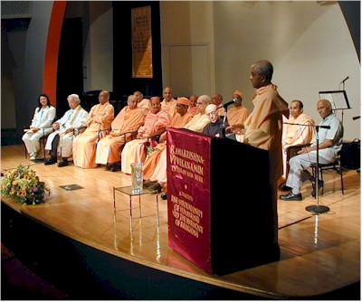
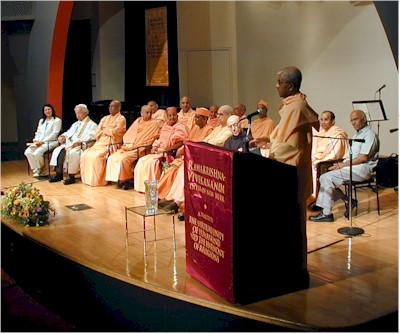
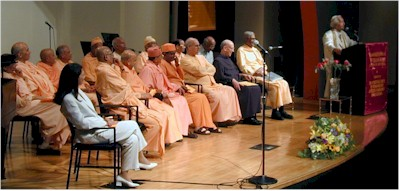
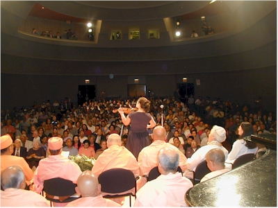
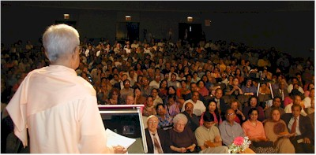
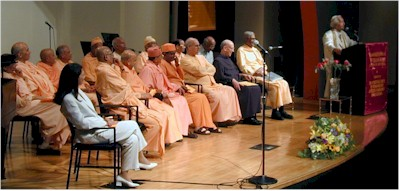
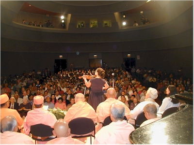
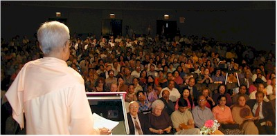

Media


Tribute to the Spiritual Oneness of Humanity
September 22, 2002
 


 





A Unique Assembly in the City of New York of the Spiritual Leaders of all Ramakrishna Order Centers of North America New School University Tishman Auditorium, September 22, 2002
Distinguished Participants (Image 2)
Front Row (left to right):
Mrs. Jan Gelberman
(Musical Artist)
Rabbi Gelberman
(The New Synagogue and All Faiths Seminary International),
Swami Jitatmananda
(Head, Ramakrishna Ashrama, Rajkot, India),
Swami Prabuddhananda
(Vedanta Society of Northern California, San Francisco, California)
Swami Pramathananda
(Vedanta Society of Toronto, Canada)
Swami Prabhananda
(Head, Ramakrishna Mission Institute of Culture, Calcutta )
Swami Swahananda
(Vedanta Society of Southern California, Hollywood, California)
Father Patrick Fitzgerald, O.F.M
(St. Francis of Assisi Church and Friary of New York)
Back Row (left to right):
Swami Yogatmananda
(Vedanta Society of Providence, Rhode Island)
Swami Tyagananda
(Ramakrishna Vedanta Society of Boston)
Swami Chidananda
(Vivekananda Vedanta Society of Chicago)
Swami Prapannananda
(Vedanta Society of Sacramento, California)
Swami Aparananda
(Vedanta Society of Berkeley, California)
Swami Shantarupananda
(Vedanta Society of Portland, Oregon)
Dr. P. Jayaraman
(Executive Director, Bharatiya Vidya Bhavan of New York)
Opening Remarks
Revered Swamis, Rabbi Gelberman, Mrs. Gelberman, Father Fitzgerald, Dr. Jayaraman and friends,
I heartily welcome you to this morning’s special program: “A Tribute to the Spiritual Oneness of Humanity.”
The spiritual leaders of the Ramakrishna Order Centers of North America have assembled here today in the City of New York, to join our other distinguished religious leaders, and all of us, in a common prayer for world peace and unity. We are extremely grateful to the Swamis and other participants for accepting our invitation and agreeing to be here today.
Yesterday, at the Haft Auditorium, under the auspices of the Bharatiya Vidya Bhavan, we had the opportunity of listening to the Swamis’ inspiring and illuminating talks on the legacy of Swami Vivekananda and his message to our country and to the world. I wish to thank Dr. Jayaraman of the Bhavan for helping to make this event possible.
One hundred and nine years ago, in his opening address to the World’s Parliament of Religions in Chicago – that first such interfaith gathering in the history of the world -- Swami Vivekananda sounded a call for interfaith harmony and peace with his now famous words:
“Sectarianism, bigotry, and its horrible descendant, fanaticism, have long possessed this beautiful earth. They have filled the earth with violence, drenched it often and often with human blood, destroyed civilization and sent whole nations to despair. Had it not been for these horrible demons, human society would be far more advanced than it is now. But their time is come; and I fervently hope that the bell that tolled this morning in honor of this convention may be the death-knell of all fanaticism, of all persecutions with the sword or with the pen, and of all uncharitable feelings between persons wending their way to the same goal.”
With these words, and with his subsequent utterances, the great Swami became the most popular figure at that historic Parliament and its foremost voice for inter-religious harmony and unity. In his final remarks to the Parliament, Swami Vivekananda concluded:
“If anybody dreams of the exclusive survival of his own religion and the destruction of the others, I pity him from the bottom of my heart, and point out to him that upon the banner of every religion will soon be written in spite of resistance: "Help and not fight," "Assimilation and not Destruction," "Harmony and Peace and not Dissension."
During this past year, the world, and indeed this very City of New York, have witnessed some of the most horrible and disturbing incidents of violence and hatred in our times. Daily, we learn of events that make us concerned and worried about the future of our small planet. Often, we feel helpless and afraid, confused and vulnerable. Yet, in spite of these destructive forces all around us, we remember the words of Swami Vivekananda, and remain hopeful.
Our world is standing at a crossroads: Scientific, technological and economic advances are fast changing the world culture, making it heavily pluralistic and multi-racial. We are seeing world-wide upheavals, breakdown of totalitarian regimes, awakening of the common man, and fervent calls for freedom and democracy. Organized religion is gradually losing its grip over people’s minds. Unity in diversity is the motto of our times. From all directions, strong voices can be heard calling for social justice, human rights, global cooperation, environmental awareness, holistic living, -- and above all, for interfaith understanding and unity.
Looking upon service to humanity as a veritable form of worship – the worship of God in man – the Ramakrishna Order Centers all over the world render extraordinary service to humanity through their various activities in the fields of health, education, disaster relief, and moral and spiritual guidance. In 1998 India’s highest honor, the Gandhi Peace Prize, was awarded to the Ramakrishna Order for its century of service to humanity – the first time that this honor was bestowed upon an entire institution. The revered Swamis and religious leaders on this platform have worked selflessly and tirelessly all their lives to further the causes of peace, tolerance and unity. It is therefore a privilege for us to have them here today, and we fervently believe that prayers uttered from this platform today will serve as a positive force for the good of our world.
May the Supreme Lord, seated in the hearts of all beings, hear our prayers, bless us, grant us strength and courage to persevere, and hasten the day when people of all faiths, cultures, nations and traditions may live together in peace and harmony. Om. Peace, peace, peace. Peace be unto us, peace be unto all living beings.
More Images